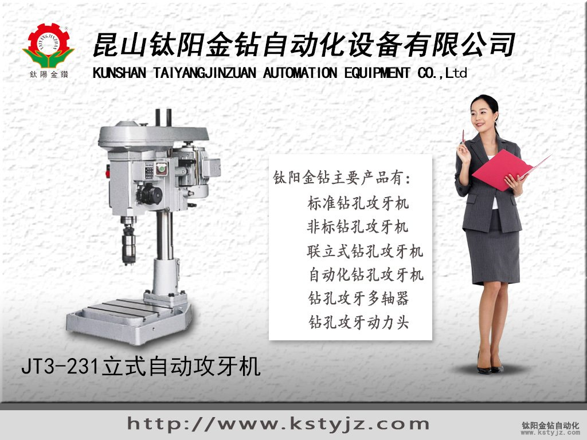

台灣攻牙機廠家鈦陽金鑽JT3-231立式自動攻牙機
文章出處：www.kstyjz.com責任編輯：kstyjz人氣：發表時間：2014-06-06 09:29
台灣攻牙機廠家鈦陽金鑽JT3-231立式自動攻牙機
鈦陽金鑽自動化是蘇州地區資深精密機械設備生產及開發的廠家，擁有多年的設計生產精密自動鑽床的經驗，多名電氣化工程師以及機械設計工程。鈦陽金鑽自動化承攬鑽床、攻牙機、打標機、倒角機、鑽孔機及相關設備的加工改造開發業務，能為客戶解決各種加工環境及加工制件的難點問題。為客戶訂製特殊自動化設備，鈦陽金鑽有多種標準設備可以加裝改造在多功能機械與加工中心上面，下面為大家介紹下鈦陽金鑽的標準型立式自動攻牙機JT3-231型。
鈦陽金鑽JT3-231立式自動攻牙機
配置名稱規格
JT3-231自動攻牙機
立式型（鈦陽金鑽牌）
重量約：
250KG
主軸沖程最大：
65 mm
旋徑：
460 mm
頭部之上下動距：
450 mm
主軸端和台之最大距離：
600 mm
工作台尺寸：
340*380 mm
基礎面積：
600*480 mm
馬達：
3相 2HP 6P 1.5KW(2HP)
主軸回轉數：
50HZ 200,100,50 60HZ 240,120,60
符合本機器使用之自動送給螺距：
(1)每英吋的牙數：19,16,14,12,11,10,9,8
(2)mm ：1.5,1.75,2.0,2.5,3.0,3.5
螺牙直徑：
M10-M32
多軸最大能力：
M10*10 軸 M16*4 軸 M20*2 軸
適用於小零件之精密攻牙，附扭力限制之轉動機構，刀具不易折斷。對沒有通孔攻牙更加適用。
※標準配件:A.工具箱1只 B.牙距齒輪2組(1組機台內，1組工具箱內，規格由客戶指定)
歡迎廣大客戶致電咨詢價格以及自動化改裝詳情，鈦陽金鑽會為您制件單獨設計適合的高效率自動攻牙機組來滿足您的生產加工需求。
上一篇：江蘇標準攻牙機昆山自動攻牙機鑽床知名企業 | 下一篇：台灣自動攻牙機鈦陽金鑽JT2-223自動攻牙機
相關資訊
- 自動鑽床自動攻牙機離合器有什麼作用'>自動鑽床自動攻牙機離合器有什麼作用
- 台式攻牙機,台式鑽床,自動鑽孔攻牙機工
- 淺談自動攻牙機改裝價格'> 淺談自動攻牙機改裝價格
- 自動攻牙機空芯鑽頭操作注意事項'>自動攻牙機空芯鑽頭操作注意事項
- 攻牙機廠家解釋為什麼要選擇多軸鑽孔器'>攻牙機廠家解釋為什麼要選擇多軸鑽孔器
- 全自動自動攻牙機報價與售後服務'>全自動自動攻牙機報價與售後服務
- 攻牙機到自動攻牙機-金鑽牌攻牙機'>攻牙機到自動攻牙機-金鑽牌攻牙機
- 多工位自動鑽孔攻牙組合機_鈦陽金鑽自動'>多工位自動鑽孔攻牙組合機_鈦陽金鑽自動
- 攻牙機多軸器在鑽床領域的應用'>攻牙機多軸器在鑽床領域的應用
- 優質的螺母攻牙機'>優質的螺母攻牙機


推薦文章
- 影響電動攻牙機性能的
- 何以自動攻牙機可以做
- 攻螺紋前鑽底孔直徑和
- 鑽孔機如何選擇,台式自
- 攻牙油 百 科
- 自動鑽床自動攻牙機離
- SPS-全自動鑽孔倒角攻牙
- 攻牙機原理,多功能機床
- 動力頭基本構造及相關
- 自動攻牙機深孔。小孔